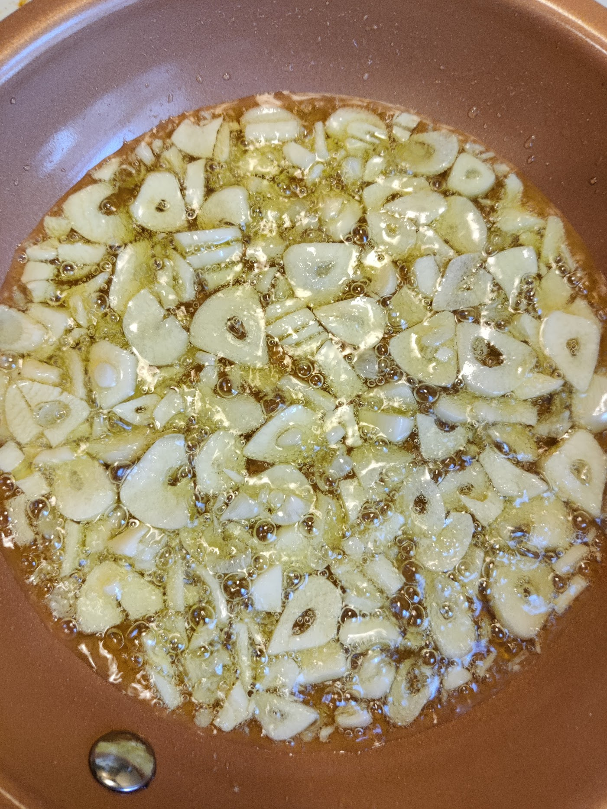

Red Pepper Flakes (Optional, but recommended unless you hate spice)
Salt
Fresh ground black pepper (can use pre-groumd, but use a bit more)
1/8 Cup fresh chopped italian flat-leaf parsley OR 1 tsp dried parsley (see Proocedure #8 below for special treatment of the dried version)
Noodle of your choice. Traditionally thin spaghetti, I prefer angel hair for this dish personally.
Ground Parm/Romano (Fresh or Store shelf kind) (Optional, Garnish). I personally omit this, but you may prefer it.
Peperoncino Peppers (Optional, Garnish) These are an optional garnish but I think the acidic brightness of the pepper contrasts excellently with the oiliness of the pasta
Procedure

Put salted water on high heat to boil noodles of your choice
Peel your garlic cloves. Tip: Cut the ends off first with a knife and then it's easy to peel
Carefully slice them as paper thin as you can get them.
Add ~1/4 cup of your olive oil (must be enough to submerge your garlic) and use med heat
Add garlic slices and Red Pepper Flakes. For a little heat, use 1/8-1/4 Tsp, for a lot, use up to 1 Tsp if you wanna feel the burn
Watch carefully. You want them to just start to brown but not fully brown or you'll get a burnt taste.
If done, take off heat and reserve until noodles are done.
Just before straining noodles, reserve 1/8 cup hot pasta water. (If using dried parsley, add it to this to give it some time to hydrate)
Strain noodles and DO NOT RINSE.
Return noodles to their pot as well as the reserved water, parsley, and all of the oil and garlic from your skillet
Liberally add salt and pepper
Stir off-heat, make sure to combine everything. Taste to see if the salt/pepper ratio is to your liking, and tweak as necessary.
Add any preferred garnishes (cheese, pepperoncinos, etc)